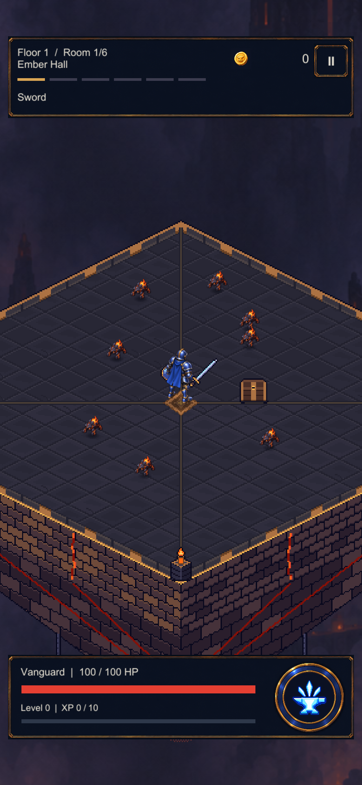
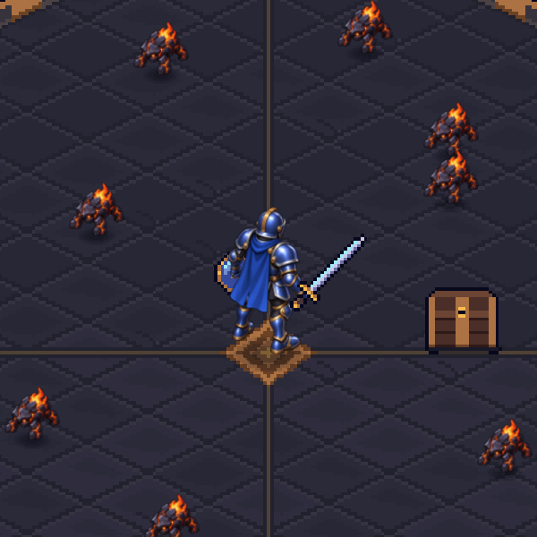
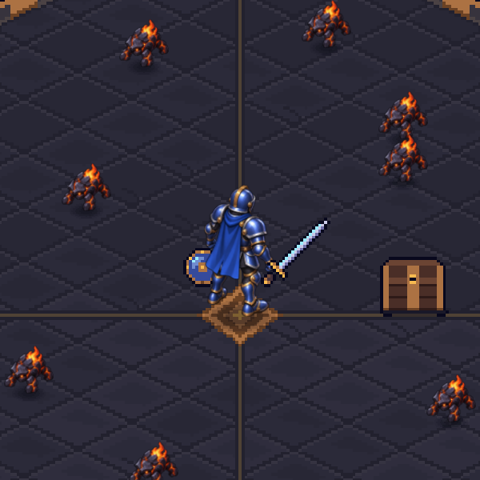
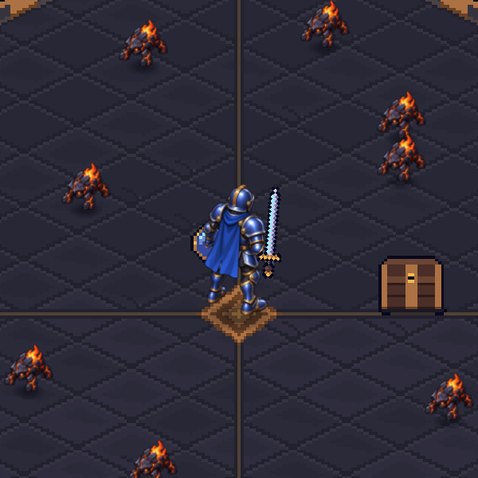

Same size. Different sprite density.
The candidate hero and eight Mites, rendered over the real furnace room. Compare texture sampling and equipment anchors before replacing production art.
Isolated review · not installed on phoneResolution comparison
World height stays fixed: hero 1.375 units, Mite 0.5 units. Existing procedural weapons stay at 32 PPU.

600×600 render at 120 pixels per world unit, matching the 1080-wide portrait's source scale. Displayed size depends on panel width. This is GPU sampling of the unchanged painted master, not hand-cleaned pixel art.
Full room and HUD

Frozen staging with isolated test profile. Actors have no live combat or enemy health bars; safe-area insets are simulated. Not a device capture.
Equipment attachment
Original 32-PPU weapons make anchor and style problems visible. The empty-handed master does not include a finger overlay to hide a grip.


Attachment motion diagnostic
The whole body translates while the sword rotates around its grip. This checks attachment stability only. Feet remain in one painted pose: it is not a walk cycle.

Production work remaining: matching equipment art, finger/weapon occlusion, opposing facings and planted-foot movement poses. Texture density alone cannot solve these.